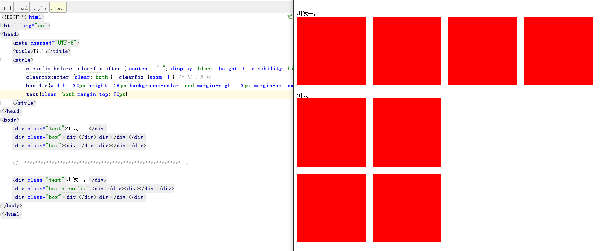
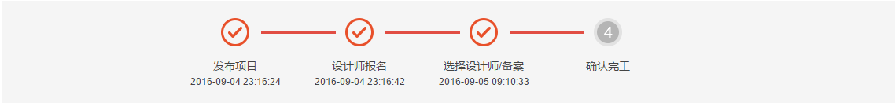
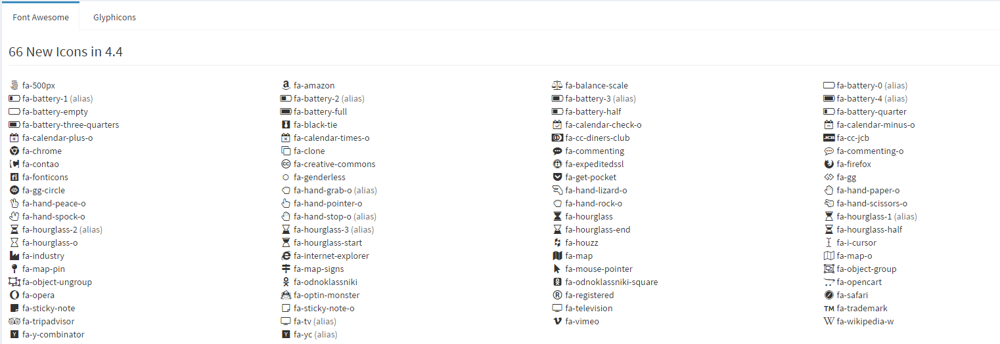
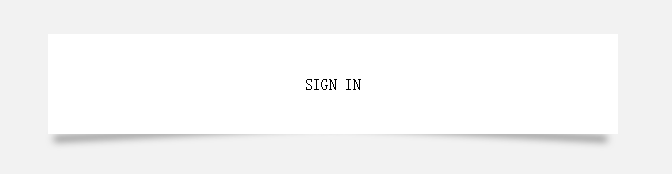

Before和After用法小结
定义 :before 选择器在被选元素的内容前面插入内容。:after选择器在被选元素的内容后面插入内容。（注：必须包含content 属性）
三、用法：清除浮动

四、用法：做时间轴

五、用法：字体文字（例如ionicfont等）

六、按钮及布局特效

七、兼容性
- Chrome 2+
- Firefox 3.5+ (3.0 had partial support)
- Safari 1.3+
- Opera 9.2+
- IE8+ (with some minor bugs
- 几乎所有的移动浏览器
- 唯一真正的问题是没有获得支持的（不用奇怪）IE6和IE7
八、注意事项
- 由于伪元素不是真正的元素，所以不会出现在DOM中。因此，它们不是可用的。所以，不要使用伪元素生成内容，是您的网页的可用性和可访问性的关键。
- 由于伪元素难以维护和调试缓慢，所以不要用伪元素显示内容。